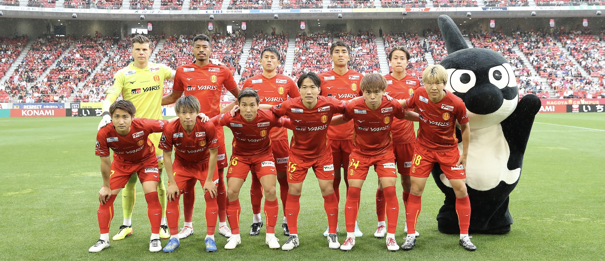
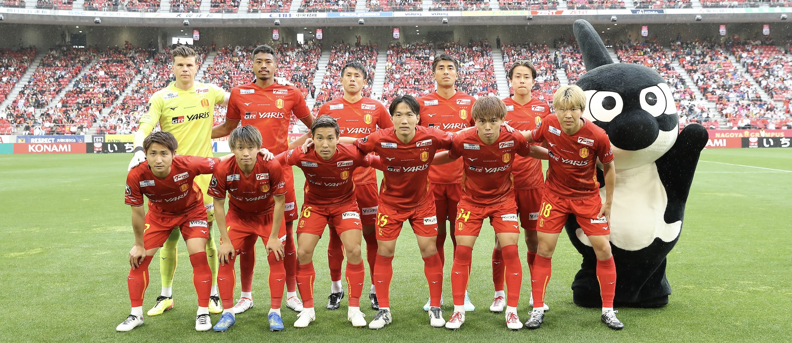

好きなサッカーチーム紹介
名古屋グランパス
応援歌とかがかっこいい
二か月に一回現地観戦、毎試合の結果を見るくらい好き
名古屋グランパスの中で好きなサッカー選手はマテウス選手です
小５の時に始めてサッカー観戦をして初めて観戦したチームが名古屋グランパスでそこで現地の盛り上がりやサッカーの魅力を知って今でも観戦しに行ったり、グッズとかをいろいろと買っている
関連してほしい物
名古屋グランパスの選手
応援歌とかがかっこいい
小５の時に始めてサッカー観戦をして初めて観戦したチームが名古屋グランパスでそこで現地の盛り上がりやサッカーの魅力を知って今でも観戦しに行ったり、グッズとかをいろいろと買っている
名古屋グランパスの選手
